| Anaemia | Diabetes | High Blood Pressure | Sex | Smoking | Death | |
|---|---|---|---|---|---|---|
| 0 | 170 | 174 | 194 | 105 | 203 | 203 |
| 1 | 129 | 125 | 105 | 194 | 96 | 96 |
Heart Disease Survival Analysis
Introduction
Heart disease is the number one cause of death in the world and identifying which factors can best predict the patient survival is critical to determining risk stratification and treatment plans. While ejection fraction and serum creatinine levels are cited as common prognosis markers in cardiology literature, the relative importance of these and other commonly collected variables warrants quantitative investigation.
This exploration used the Heart Failure Prediction data set, which contains the follow-ups from 299 patients treated for heart failure including clinical measurements (ejection fraction, serum creatinine, serum sodium) and demographic factors (age, sex, smoking status), with mortality and time as outcomes of interest.
The goal of this exploration was to utilize survival analysis techniques such as log-rank tests and Kaplan-Meier and Cox proportional hazard modeling to identify which factors are independently associated with patient survival, and to see if the data adheres to the assumptions of these models.
The analysis started with exploratory analysis, followed by uni-variate screening, multivariate model selection supported by likelihood ratio tests, and finished with diagnostic checks of the model assumptions.
Exploratory Analysis
Of the 299 patients, 92 (32%) experienced the death event during their follow-ups, while the remaining 203 (68%) were censored. This censoring was a substantial amount, but it was consistent with the relatively short follow-up window and was assumed to be non-informative. The number of observed events (92) relative to the number of covariates (k=4) in the final model approached the conventional threshold of around 10 observations per covariate, suggesting adequate but not abundant statistical power for the multivariate Cox-PH model.
| Mean | Standard Deviation | Median | |
|---|---|---|---|
| Age | 60.83389 | 11.894809 | 60.0 |
| Creantinine Phosphokinase | 581.83946 | 970.287881 | 250.0 |
| Ejection Fraction | 38.08361 | 11.834841 | 38.0 |
| Platelets | 263358.02926 | 97804.236869 | 262000.0 |
| Serum Creatinine | 1.39388 | 1.034510 | 1.1 |
| Serum Sodium | 136.62542 | 4.412477 | 137.0 |
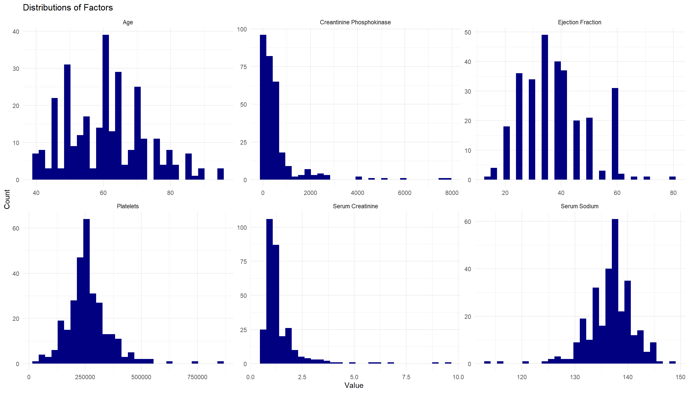
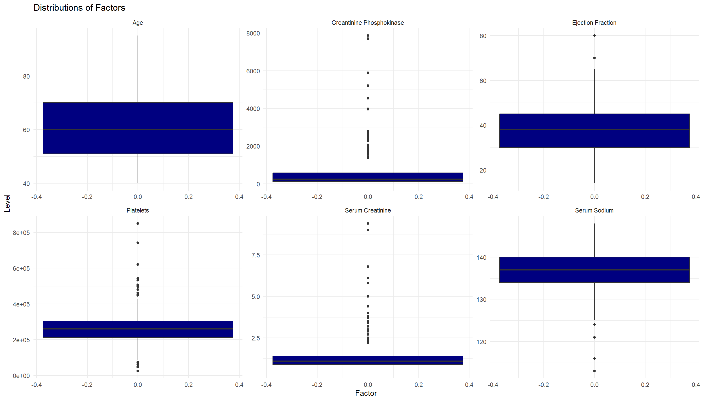
This data set contains 6 continuous variables: age, creatinine phosphokinase, ejection fraction, serum creatinine, and serum sodium. Patients ranged from 40-95 years of age with a mean of 60.8, aligning with the demographic in risk of heart failure. Age and ejection fraction showed a relatively symmetric distribution while creatinine phosphokinase, platelets, and serum creatinine are heavily skewed right. Serum sodium is slightly skewed left.
There were several outliers in creatinine phosphokinease, platelets, and serum creatinine, which most likely indicate spikes in clinical values in acutely ill patients. These values were retained rather than removed as they most likely represent genuine extremes rather than errors in data entry. Regardless of factor distribution, the Cox model does not require a normal distribution.
The skewness observed in several variables gave motivation to check the linearity of martingale residuals later, to verify whether the assumed linear relationship between these factors and the log-hazard was appropriate.
| Missing | |
|---|---|
| age | 0 |
| anaemia | 0 |
| creatinine_phosphokinase | 0 |
| diabetes | 0 |
| ejection_fraction | 0 |
| high_blood_pressure | 0 |
| platelets | 0 |
| serum_creatinine | 0 |
| serum_sodium | 0 |
| sex | 0 |
| smoking | 0 |
| time | 0 |
| DEATH_EVENT | 0 |
There was no missing data, meaning there was no need for imputation or case exclusion.
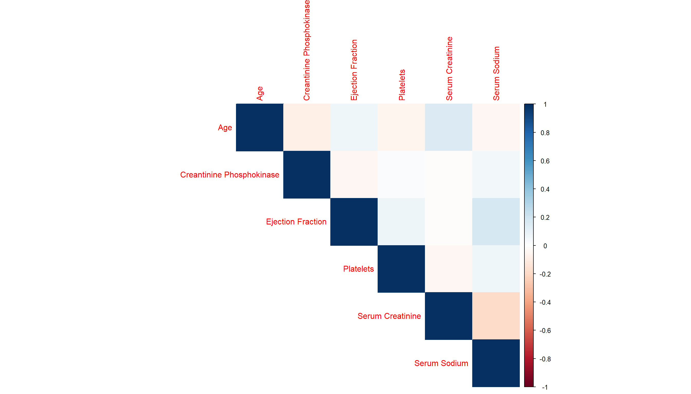
The continuous covariates were all relatively uncorrelated. This means that no covariates required removal. It also supports the use of multiple continuous variables in a multivariate Cox model without any concern for multicollinearity affecting coefficient estimates. The diagonal shows each variable’s perfect correlation with itself and is not informative for assessing relationships between distinct variables.
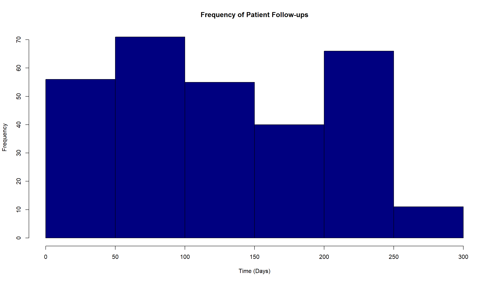
This histogram shows the times when patients either died or stopped following up in the study. The even distribution shows that follow-ups were occurring throughout the entire study. The slight decay at the end of the graph could indicate a fewer number of remaining patients.
Survival Modeling
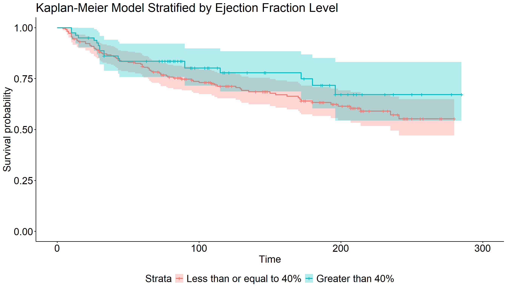
Call:
survdiff(formula = Surv(time, DEATH_EVENT) ~ EF_healthy, data = data)
N Observed Expected (O-E)^2/E (O-E)^2/V
EF_healthy=0 219 77 71.5 0.424 1.67
EF_healthy=1 80 19 24.5 1.236 1.67
Chisq= 1.7 on 1 degrees of freedom, p= 0.2 We started out with the Kaplan-Meier model to build a purely descriptive model. Ejection fraction was chosen as the variable of stratification as it is a commonly cited identifier of heart failure in clinical and academic research. Ejection fraction refers to the percentage of blood pumped out from the left ventricle, and levels below 40% generally indicate heart failure. From the graph, we can see that patients with less than 40% consistently have a lower chance of survival. However, using the log-rank test, we determined that there is not a statistically significant difference between the two groups.
HR lower upper p_val variable
8 1.340 1.200 1.490 1.19e-07 serum_creatinine
1 1.040 1.030 1.060 8.36e-07 age
5 0.955 0.935 0.975 1.73e-05 ejection_fraction
9 0.935 0.900 0.971 5.20e-04 serum_sodium
6 1.550 1.030 2.330 3.74e-02 high_blood_pressure
2 1.400 0.938 2.090 9.98e-02 anaemia
3 1.000 1.000 1.000 2.62e-01 creatinine_phosphokinase
7 1.000 1.000 1.000 4.66e-01 platelets
4 0.959 0.639 1.440 8.40e-01 diabetes
10 1.010 0.667 1.540 9.49e-01 sex
11 0.990 0.643 1.530 9.65e-01 smokingWhile the Kaplan-Meier model can show us the survival for a single stratified factor, we choose the Cox-proportional hazards model as it is able to include several covariates. However, including every covariate in the model can decrease the precision and reliability of the model’s predictions. We fit univariate Cox-PH models for each variable to see which variables are statistically significant and worth keeping for the final multivariate model. Serum creatinine, age, ejection fraction, serum sodium, and high blood pressure were statistically significant covariates to a significance level of 0.05.
| coef | exp(coef) | se(coef) | z | Pr(>|z|) | |
|---|---|---|---|---|---|
| serum_creatinine | 0.3470006 | 1.4148175 | 0.0667047 | 5.202045 | 0.0000002 |
| age | 0.0441727 | 1.0451629 | 0.0090268 | 4.893501 | 0.0000010 |
| ejection_fraction | -0.0495867 | 0.9516226 | 0.0099680 | -4.974577 | 0.0000007 |
| high_blood_pressure | 0.4712362 | 1.6019733 | 0.2114096 | 2.229020 | 0.0258126 |
Analysis of Deviance Table
Cox model: response is Surv(time, DEATH_EVENT)
Model 1: ~ serum_creatinine + age + ejection_fraction + high_blood_pressure
Model 2: ~ serum_creatinine + age + ejection_fraction + high_blood_pressure + anaemia + creatinine_phosphokinase
loglik Chisq Df Pr(>|Chi|)
1 -473.55
2 -470.70 5.7113 2 0.05752 .
---
Signif. codes: 0 '***' 0.001 '**' 0.01 '*' 0.05 '.' 0.1 ' ' 1For robustness, we fit a multivariate model with all of the covariates to ensure that the univariate modeling step did not screen out any significant covariates. Creatinine phosphokinase and anaemia were found to be significant in a multivariate model while being insignificant in their own univariate models. However, after fitting a model with the new set of significant covariates, we found that anaemia was no longer significant. Removing anaemia resulted in creatinine phosphokinase becoming insignificant as well. This suggested that the two covariates had overlapping variance and that their apparent significance depended on if both were included rather than reflecting confounding by the other covariates in the model.
Having landed on a model of the significant covariates serum creatinine, age, ejection fraction, and high blood_pressure, we used a likelihood ratio test to compare this reduced model to a model additionally including anaemia and creatinine phosphokinase. This test tells us how well each model explains the observed data. We found a p-value of 0.05752, which is slightly outside our significance threshold of 0.05. Despite this, we chose the reduced model over the original model due to the instability of significance created when considering anaemia and creatinine phosphokinase. We note that this borderline results may be the result of limited statistical power due to the modest number of observed events(n=96) rather than the conclusive evidence of the tests against these variables’ significance.
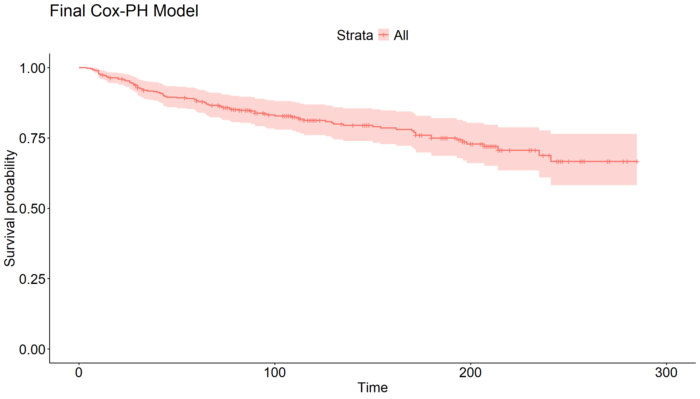
Diagnostics
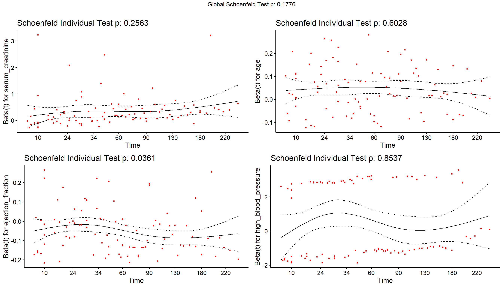
After fitting the model, we check the Schoenfeld residuals to ensure that there is no time dependency for any of the covariates, which would violate the proportional hazards assumption of the model. We look for relatively straight lines throughout the entire graph and also check the p-values to make sure our judgement is correct. Ejection fraction appears to have a relatively straight line but the p-value(0.0361) is below our 0.05 significance threshold, a reminder that visual interpretation alone is not enough. While the ejection fraction test is worrisome, including it does not lower our global test p-value(which assesses the proportional hazards of all covariates jointly) below our significance threshold. The apparent bimodal scatter seen in high blood pressure is due to the binary nature of the variable, and is not indicative of non-proportionality. The p-value affirms that it is not time dependent.
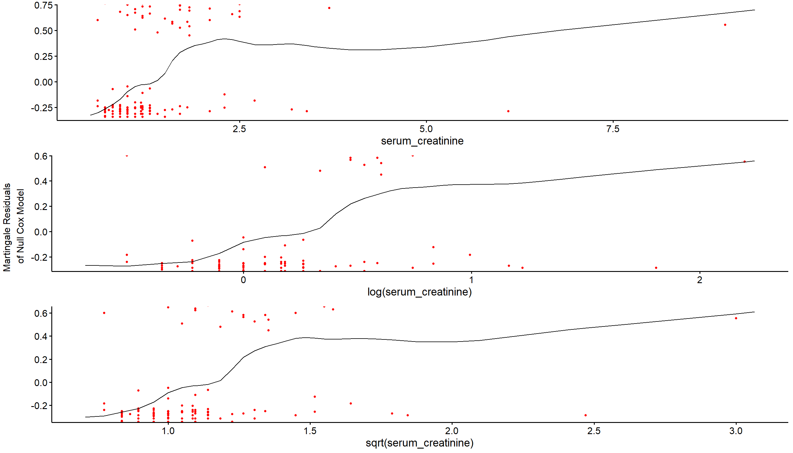
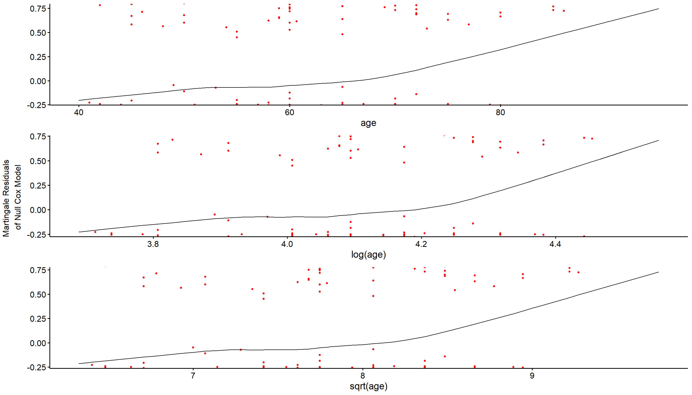
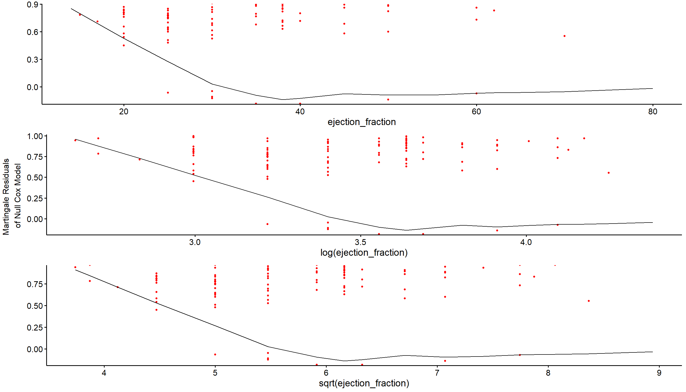
The Cox-PH model also assumes covariates have a linear form and we check that by plotting martingale residuals and observing the fitted lowess lines. None of the three continuous variables indicate linearity and simple transformations did not fix the issue. Given that log and square root transformations did not address the patterns, it is likely that more flexible approaches (cubic spline) beyond the scope of this analysis and that the linear functional form was retained for all three variables. This presents us with some limitations: the hazard ratios should be taken as reflecting an average linear effect across the observed range which may not capture potential threshold or accelerating relationships, particularly for extreme values of age or serum creatinine.
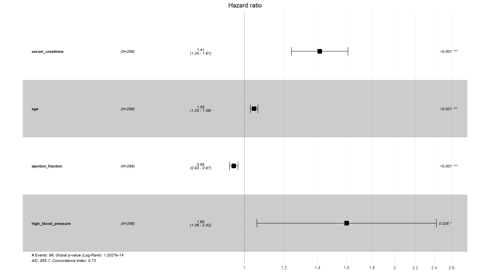
The final fit hazard ratio graph gives a quick look at how much each variable contributes to survival rates per year. Points on the right of the dotted vertical line at 1 indicate variables which increase the hazard, which corresponds to decreasing survival rates. A concordance index of 0.73 indicates that the model relatively ranks 73% of all pairs correctly and tells us that our model is decent at distinguishing high versus low risk patients..
Conclusion
This analysis used the Kaplan-Meier and Cox proportional hazards model to identify clinical and demographic predictors for survival in a sample of 299 heart failure patients. The final multivariate model utilizes serum creatinine, age, ejection fraction, and high blood pressure as independent predictors of mortality.
These findings are largely consistent with clinical and academic studies which identify serum creatinine, age, ejection fraction, and high blood pressure as risk factors in heart failure. While smoking is a well-established risk for developing heart failure, it was not found to be significantly associated with mortality risk among patients already diagnosed with heart failure.
Model selection was guided by univariate screening, likelihood ratio testing, and sensitivity analysis, including verification that no significant covariates were left out of the final model. Diagnostic checks confirmed that the model followed proportional hazard assumptions, with one borderline case with ejection fraction.
There were several limitations in the analysis of this data. Firstly, while the sample size was 299, the actual number of non-censored data points only numbered 96. This amount related to the number of covariates shows limited statistical power, which can be seen in the edge cases of anaemia and creatinine phosphokinase (p=0.058). Additionally, martingale residuals suggest non-linear relationships between the three significant covariates, including simple transformations like log and square root, suggesting that linear hazard ratios should be interpreted as averages across their observed range rather than precise constant relationships. Diagnostic checks confirmed that the model reasonably satisfied the proportional hazards assumption overall (global p=0.178), with one borderline individual case for ejection_fraction (p=0.036).
Future work could involve utilizing more flexible models to better characterize non-linear relationships, apply competing risk methods if cause-specific mortality information became available, or validate these findings in an external cohort.
References
American Heart Association. “Heart Failure.” Www.heart.org, American Heart Association, 2020, www.heart.org/en/health-topics/heart-failure.
CDC. “About Heart Failure.” CDC.gov, 29 Apr. 2024, www.cdc.gov/heart-disease/about/heart-failure.html.
Metra, Marco, et al. “Prognostic Significance of Creatinine Increases during an Acute Heart Failure Admission in Patients with and without Residual Congestion.” Circulation: Heart Failure, vol. 11, no. 5, May 2018, https://doi.org/10.1161/circheartfailure.117.004644.
Appendix
library(tidyverse)
library(survival)
library(survminer)
library(knitr)
#import data
data <- read.csv("heart_failure_clinical_records_dataset.csv")
#summarize counts for discrete vars
discrete_vars <- c("anaemia", "diabetes", "high_blood_pressure", "sex", "smoking", "DEATH_EVENT")
disc_summ <- sapply(data[discrete_vars], table)
colnames(disc_summ) <- c("Anaemia", "Diabetes", "High Blood Pressure", "Sex", "Smoking", "Death")
kable(disc_summ, caption="Summary of Discrete Variables")
#numerical summary for continuous vars
continuous <- data %>%
select(-c(anaemia, diabetes, sex, smoking, time, DEATH_EVENT, high_blood_pressure))
cont_summary <- sapply(continuous, function(x) {
c(Mean=mean(x),
"Standard Deviation"=sd(x),
Median=median(x))
})
colnames(cont_summary) <- c("Age", "Creantinine Phosphokinase", "Ejection Fraction", "Platelets", "Serum Creatinine", "Serum Sodium")
kable(t(cont_summary), caption="Summary of Continuous Variables")
#graphical summary for continuous vars
colnames(continuous) <- c("Age", "Creantinine Phosphokinase", "Ejection Fraction", "Platelets", "Serum Creatinine", "Serum Sodium")
long_cont <- pivot_longer(continuous, cols=everything(), names_to="variable", values_to="value")
ggplot(long_cont, aes(x=value)) +
geom_histogram(fill="navy") +
facet_wrap(~variable, scales="free") +
labs(
title="Distributions of Factors",
x="Value",
y="Count"
) +
theme_minimal()
ggplot(long_cont, aes(y=value)) +
geom_boxplot(fill="navy") +
facet_wrap(~variable, scales="free") +
labs(
title="Distributions of Factors",
x="Factor",
y="Level"
) +
theme_minimal()
#missing value check
miss <- as.data.frame(colSums(is.na(data)))
colnames(miss) <- c("Missing")
kable(miss, caption="Missing Data")
#correlation plot
library(corrplot)
cors <- cor(continuous)
corrplot(cors, type="upper", method="color")
#follow-up distribution check
hist(data$time,
col="navy",
main="Frequency of Patient Follow-ups",
xlab="Time (Days)")
#kaplan-meier plot
data <- data %>%
mutate(
EF_healthy = as.numeric(ejection_fraction > 40)
)
km_fit <- survfit(Surv(time, DEATH_EVENT) ~ EF_healthy, data=data)
fit <-ggsurvplot(km_fit, data=data, conf.int=TRUE,
font.main = 24,
font.x = 20,
font.y = 20,
font.tickslab = 20,
font.legend = 20,
title="Kaplan-Meier Model Stratified by Ejection Fraction Level",
legend="bottom",
legend.labs=c("Less than or equal to 40%", "Greater than 40%"))
fit
#log-rank test
survdiff(Surv(time, DEATH_EVENT) ~ EF_healthy, data=data)
#univariate variable screening
covariates <- c("age", "anaemia", "creatinine_phosphokinase", "diabetes",
"ejection_fraction", "high_blood_pressure", "platelets",
"serum_creatinine", "serum_sodium", "sex", "smoking")
univ_formulas <- lapply(covariates,
function(x) as.formula(paste('Surv(time, DEATH_EVENT) ~', x)))
univ_models <- lapply(univ_formulas, function(x) {coxph(x, data=data)})
#table with key elements from model list
univ_results <- lapply(
univ_models,
function(x) {
s <- summary(x)
c(
HR = signif(s$coef[1, "exp(coef)"], 3),
lower = signif(s$conf.int[1, "lower .95"], 3),
upper = signif(s$conf.int[1, "upper .95"], 3),
p_val = signif(s$coef[1, "Pr(>|z|)"], 3)
)
}
)
forest_df <- as.data.frame(do.call(rbind, univ_results))
forest_df$variable <- covariates
forest_df[order(forest_df$p_val), ]
#multivariate fitting with anaemia and creatine phosphokinase
red_fit <- coxph(Surv(time, DEATH_EVENT)~serum_creatinine+age+ejection_fraction+high_blood_pressure+anaemia+creatinine_phosphokinase, data=data)
#multivariate fitting without anaemia and creatine phosphokinase
final_fit <- coxph(Surv(time, DEATH_EVENT)~serum_creatinine+age+ejection_fraction+high_blood_pressure, data=data)
s <- summary(final_fit)
kable(s$coefficients, caption="Final model")
#likehood ratio test to check reduced model
anova(final_fit, red_fit, test="LRT")
#Final Cox-PH model plot
ggsurvplot(survfit(final_fit), data=data,
title="Final Cox-PH Model",
font.main = 24,
font.x = 20,
font.y = 20,
font.tickslab = 20,
font.legend = 20)
#schoenfeld residual test for time dependency
zph <- cox.zph(final_fit)
ggcoxzph(zph)
#martingale residual graphs to check for linearity
ggcoxfunctional(Surv(time, DEATH_EVENT) ~ serum_creatinine + log(serum_creatinine) + sqrt(serum_creatinine), data=data)
ggcoxfunctional(Surv(time, DEATH_EVENT) ~ age + log(age) + sqrt(age), data=data)
ggcoxfunctional(Surv(time, DEATH_EVENT) ~ ejection_fraction + log(ejection_fraction) + sqrt(ejection_fraction), data=data)
#final hazard ratio plot
ggforest(final_fit, data=data)